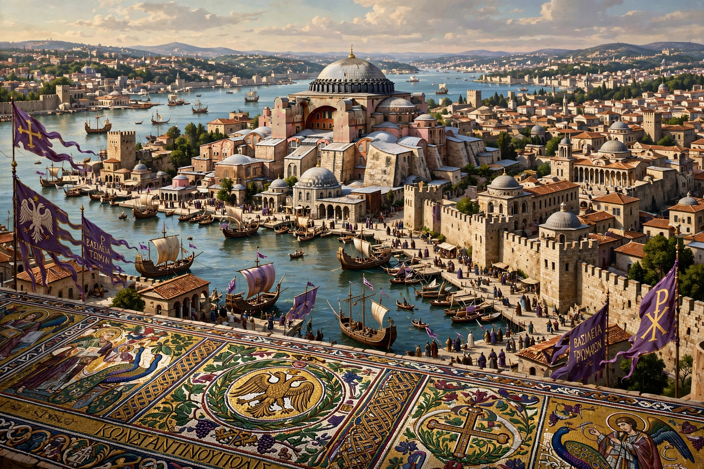

Capital: Constantinople
Period: c. 330 – 1453
Languages: Latin, then Greek
Religion: Eastern Orthodox Christianity
The Byzantine Empire was the continuation of the Roman Empire in its eastern provinces, centred on Constantinople, surviving for over a millennium after the fall of the West in the 5th century AD.
Constantine I refounded Byzantium as Constantinople in 330. Under Justinian I the empire briefly reconquered parts of the West and codified Roman law. The 7th century brought losses to Persia and then the Arab conquests, after which the empire reorganised into military themes.
The Macedonian dynasty oversaw a revival; Basil II extended borders by 1025. Defeat at Manzikert (1071) and the sack of Constantinople by the Fourth Crusade (1204) fractured the state, which was restored in 1261 but never recovered its strength. Emperors such as Manuel I Komnenos attempted revival in the 12th century.
On 29 May 1453 Sultan Mehmed II of the Ottoman Empire captured Constantinople, ending the empire; the last emperor, Constantine XI, died in the fighting.
Byzantium preserved Roman law and Greek learning, produced distinctive art and architecture such as Hagia Sophia, spread Orthodox Christianity to the Slavs, and influenced religious movements including Bogomilism.